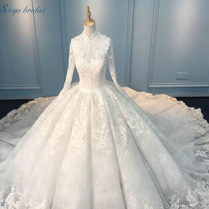

目录
1. 出典：
Ø 戴手表的白兔
Ø 结婚礼服
Ø 七个小矮人
Ø 交感巫术
2. 翻译：
Ø 其它
3. 剧情：
Ø 对gift的讲解
Ø 其它
1. 出典：
出自《爱丽丝梦游仙境》开头的白兔，原作中戴着怀表，在游戏中却佩戴着数字腕表。口癖是“要迟到了”。他在第七章还会出现，向Alice索要赔偿。
另外，这只兔子和灰流穿的是同样的衣服。
Figure 1. 《爱丽丝漫游仙境》中白兔先生的插画
王女的婚纱礼服，gift的一种，拥有这件礼服的人可以与任何人或事物结婚。如果接受了别人的请求就不会再被邀请，但是两个人必须H…....当一个男人拥有这个gift的时候，它就会消失。

Figure 2. 结婚礼服
七个小矮人, 是童话故事《白雪公主和七个小矮人》的一组虚构人物。在格林兄弟的原版故事中他们并没有名字。而在迪士尼1937年动画《白雪公主和七个小矮人》中他们的名字分别是Doc（万事通）、Grumpy（爱生气）、Happy（开心果）、Sleepy（瞌睡虫）、Bashful（害羞鬼）、Sneezy（喷嚏精）以及Dopey（糊涂蛋）。
Figure 3. 七个小矮人
这里英译的有问题，原文“共感呪術”，所以准确的翻译应该是，交感巫术。
英国人类学者弗雷泽（关于弗雷泽Frazer详见第六章）把交感巫术称作为顺势巫术（或模仿巫术）和接触巫术的总称。
他认为原始巫术可分为两种形式：一种是以“相似律”为基础的“顺势巫术”或“模仿巫术”，在这种巫术中，巫师仅仅通过模仿就能实现任何他想做的事；另一种是以“接触律”为基础的“接触巫术”，施行这一巫术也就是通过曾为某人接触过的物体而对其本人施加影响。弗雷泽把上述两种巫术统称为“交感巫术”，因为它们都建立在这样的信念基础上，即认为通过某种神秘的感应，就可以使物体不受时空限制而相互作用。
交感巫术分为两种巫术，一种是人体分出去的部分，仍然能够继续得到相互的感应，叫做接触巫术（contagious magic），例如：头发、指甲、眼睫毛、眉毛、腋毛等，虽然离开了人体，依然和人体有密切的关系，如果施术在其上，就能影响于人体。
另一种则是举凡曾经接触过的两种东西，以后即使分开了，也能够互相感应，这叫做顺势巫术（Homoeopathic magic），施术于脚印、衣物（或是剧情中的结婚礼服），这些脚印、衣物也能与人体互相感应，受害者将受影响。
2. 剧情：
和乐队同伴同行的黛看到了一件婚礼礼服，一瞬间新宿变成了森林，混乱中的黛被森林里的角色欢迎，并且被撺掇着穿上了结婚礼服的gift。穿上之后，黛被无数森林中的角色求婚，走投无路之际遇到灰流。在他的建议下，黛宣布灰流为她的新郎，从而摆脱了追求者，但两人在gift的规则下，不得不进行新婚初夜。。。H场景之后之后，gift发生交换，礼服在转移到灰流身上之后消失。
 Garden，或庭院，是在现实中的森林世界的名字，游戏中所有riddle（谜语）实施的地点，在第七章中爱丽丝会大量使用这个词。
Garden，或庭院，是在现实中的森林世界的名字，游戏中所有riddle（谜语）实施的地点，在第七章中爱丽丝会大量使用这个词。
 所有的回忆（Reminiscence）都发生在第一章，也就是续章之前。
所有的回忆（Reminiscence）都发生在第一章，也就是续章之前。
3. 翻译：
Gift? What’s that? A curse?
礼物？那是啥？诅咒？
“It is a curse and also a treasure.
It gives you power and also binds you. That’s just how magic works”
Gift既是诅咒，也是宝物。它给予使用者力量，
同时也会束缚使用者。魔法就是这样的东西。
 No
changing your name.
No
changing your name.
That’s probably against the rules in the world of magic.
（灰流）在魔法的世界中，改变名字是违反规则的。
 Has
the forest returned?
Has
the forest returned?
Are we already in its trap?
（灰流）森林已经回来了吗？我们已经落入陷阱中了？